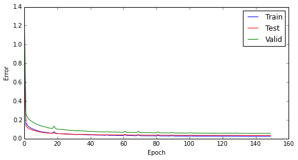

Mar 19, 2014
During the spring break I decided to run some experiments with MLPs as generative models, using both acoustic samples and phone codes as input. The experiment's objective is two-fold: I wanted to investigate if using information from surrounding frames improves the models (when compared to what our colleagues have found), and I also wanted to have a baseline to compare to the models based on sparse coding that I have been working on. In the experiments by Hubert, Jean-Phillipe, and William, only the acoustic samples information was used as input. Amjad has already done some tests incorporating phone information, but it seems he is using only the current phone.
In my experiments, I updated Vincent's dataset implementation in order to make it provide the phones corresponding to the current, previous, and next frame. The code can be found in my fork. Previously I was using Python code to setup pylearn2 experiments, but I decided to switch to YAML for these experiments as I didn't need to do anything fancy. The YAML for this experiment can be found here and the serialized model is here. The dataset was configured as follows:
With this configuration, each example is a vector with \(160 + 3*62 = 346\) values. The MLP was set-up and trained as follows:
Total training time for this experiment was approximately 1.15 hours, running on a CPU (Intel Core i7-2600, 8 GB RAM, with Theano running over MKL and using 4 cores simultaneously). As mentioned before, I considered 10 iterations without improvement as the convergence condition, which happened by the iteration 159. A plot for the training, testing, and validation set errors can be seen below. The errors found after convergence (for the normalized, i.e., centered and divided by the standard deviation) were the following:
A plot showing the evolution of the errors over epochs can be seen below.
To evaluate the trained network as a synthesizer, I got a sequence of phone codes straight out of a sentence in the validation set and used it as input to the MLP. As I did not have a previous frame, the initial input is a frame with only zeros on it. I played with a multiplicative factor on the noise added to the Gaussian sampling as David did, as using directly the test error I ended up with bursts as can be seen below. The following multiplicative factors were tested: [0.01, 0.05, 0.1, 0.5, 1, 2, 5, 10]. As using high noise levels ends up corrupting too much the signal, I filtered them down to approximately the telephone bandwidth (300-4000 Hz) with a \(4^{th}\) order Butterworth passband filter, just to reduce the overall effect of noisy sampling. For low noise multipliers, all I got was a short burst and then the output stays at zero. However, by increasing the noise level to five times the mean square test error, apparently I got some more structure: even though it has almost nothing to do with whatever should have been synthesized, it does sound like multiple speakers babbling. The respective audio files and plots (acoustic waveform + spectrogram) can be seen below:
0.01:
0.05:
0.1:
0.5:
1.0:
2.0:
5.0:
10.0:
One interesting thing: I did the same procedure to generate an output during training, sometime around the \(130^{th}\) iteration. The output generated at that stage sounded much nicer than what I got after the training finished, but unfortunately the pickled model was overwritten because of the way I set up my YAML file, which overwrites the old model every time an iteration improves the objective. The only thing I kept was the output:
Moving forward, I will write in my next post about the (not so successful) tests I did using sparse coding coefficients instead of acoustic samples as inputs. I will also comment about some ideas to incorporate more advanced models in my experiments.